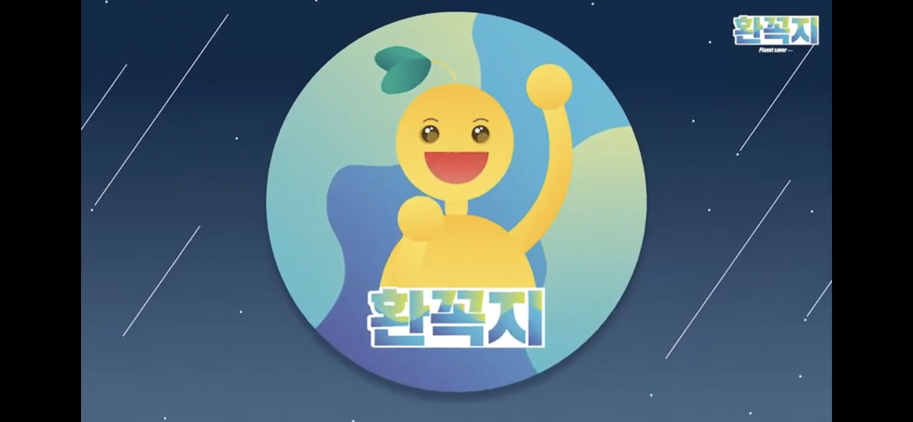

- First
- Second
- Third
Second
환경을 꼭 지키는 환경유튜버,
환꼭지의 PD로 영상에 출연!
두번째 유튜브

환꼭지 플로깅 영상
안녕하세요- 환경 꼭 지키자! 환꼭지입니다.
첫 영상을 드디어 업로드하게 되었습니다 하하하
홍보는 몇 개월 전부터 했는데 이제서야 올리네요...ㅎ
조깅을 하면서 쓰레기를 줍는 '플로깅'을 정읍에서 해보았습니다-!
건강과 환경까지 일석이조로 지킬 수 있는 플로깅 운동! 여러분도 함께 동참하시지 않으실래요?
앞으로 모든 국민이 환경을 지키기 위해 노력하는 그 날까지, 계속해서 저희는 달립니다.
환경 꼭 지키자! 환-꼭-지에요~!
#환경유튜브 #환경유튜버 #환꼭지 #환경꼭지키자 #정읍 #플로깅 #환경과건강을동시에!